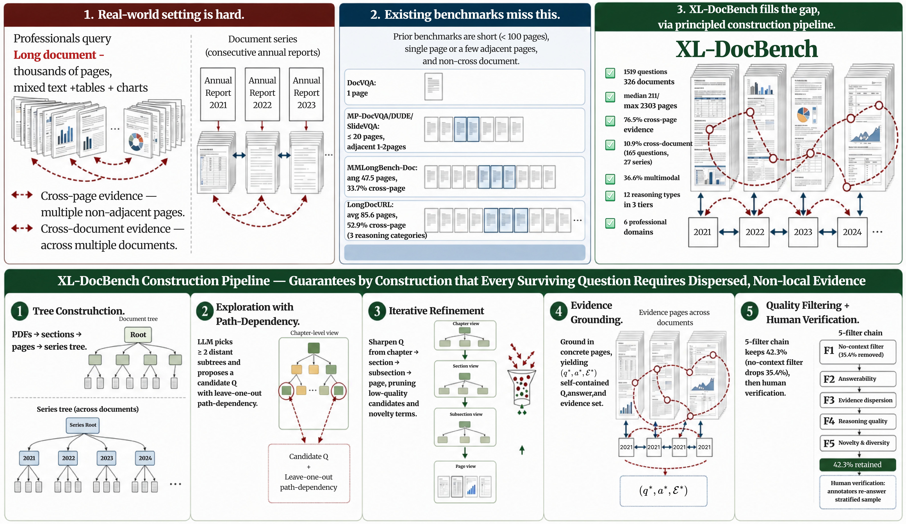
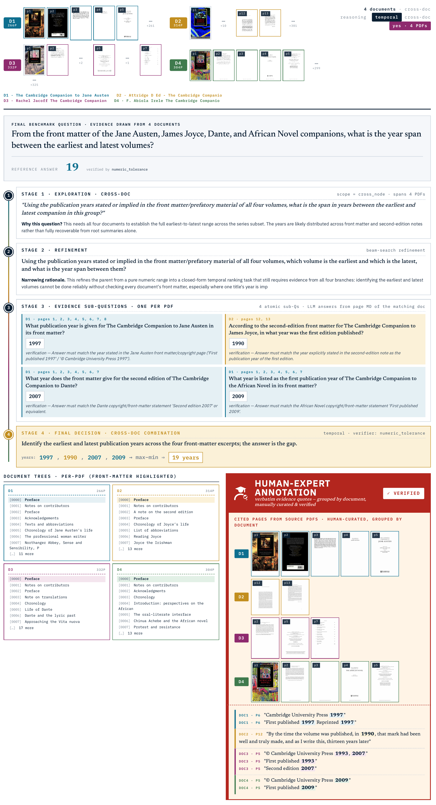

331 public professional documents
Legal, finance, technical, medical, scientific, and narrative sources with contexts ranging from local documents to multi-PDF series.
A human-verified benchmark for extra-long document understanding
1 Wuhan University2 Microsoft
† Equal contribution‡ Work done during an internship at MSRA* Project leader
XL-DocBench evaluates whether systems can find, combine, and verify evidence across hundreds or thousands of pages of professional documents.
Abstract
XL-DocBench is a fully human-verified benchmark for extra-long professional-document understanding. It contains 1,519 questions across six domains, with contexts up to 2,303 pages and expert-annotated page-level evidence.
Each example stores evidence pages and quotes, an answer format, a typed verification rule, and one of twelve reasoning labels. The benchmark separates retrieval, evidence use, rule following, and unsupported-answer failures that aggregate QA accuracy alone cannot diagnose.
Benchmark positioning
XL-DocBench evaluates long-document systems under realistic document length, evidence dispersion, multimodal support, and explicit answer-verification conditions.
Legal, finance, technical, medical, scientific, and narrative sources with contexts ranging from local documents to multi-PDF series.
Every retained item includes answer support from annotated pages and quotes, together with an answer format and typed verification rule.
Multi-page, multimodal, cross-document, and None-answer examples expose distinct long-document failure modes.
None-answer casesTABLE 01 · BENCHMARK LANDSCAPE
XL-DocBench jointly increases context scale, evidence spread, cross-document scope, and answer-support diagnostics.
| Benchmark | Release | Pages | Tokens | Cross-page | Cross-doc. | Unans. | Source | Avg. evidence pages |
|---|---|---|---|---|---|---|---|---|
| DocVQA | 2020-07 | 1.0 | 151.5 | × | × | × | TXT/L/C/TAB/I | 1.0 |
| ChartQA | 2022-03 | 1.0 | 236.9 | × | × | × | C | 1.0 |
| InfoVQA | 2021-04 | 1.2 | 288.0 | × | × | × | L/C/TAB/I | 1.0 |
| TAT-QA | 2022-07 | 1.1 | 577.0 | × | × | × | TXT/TAB | 1.0 |
| VisualWebBench | 2024-04 | 1.0 | 452.4 | × | × | × | L/I | 1.0 |
| MP-DocVQA | 2022-12 | 8.3 | 2,026.6 | × | × | × | TXT/L/C/TAB/I | 1.0 |
| DUDE | 2023-05 | 5.7 | 1,831.5 | ✓ (*) | × | ✓ (*) | TXT/L/C/TAB/I | — |
| SlideVQA | 2023-01 | 20.0 | 2,030.5 | ✓ (*) | × | × | TXT/L/C/TAB/I | — |
| MMLongBench-Doc | 2024-07 | 47.5 | 21,214.1 | ✓ (33.0%) | × | ✓ | TXT/L/C/TAB/I | 1.88 |
| LongDocURL | 2025-07 | 85.6 | 43,622.6 | ✓ (52.9%) | × | ✓ | TXT/L/TAB/I | 1.53 |
| XL-DocBench | 2026-04 | 297.1 | 227,463.2 | ✓ (72.6%) | ✓ | ✓ | TXT/TAB/C/I | 2.30 |
TXT/L/C/TAB/I: text, layout, chart, table, and image. (*) indicates the benchmark includes the capability but does not report the corresponding percentage.
Construction methodology
Candidate generation operates over document-tree branches; human experts establish the final page-level evidence and verification labels.

Parse PDFs into pages, text, tables, figures, and hierarchical trees.
Keep candidates only when removing a selected branch removes necessary support.
Reject local shortcuts, metadata leakage, malformed answers, and weak evidence.
Experts re-answer, mark pages and quotes, and check the typed rule.
Dataset design and annotation
Each example combines a reasoning label, evidence-grounded verification record, and context-level statistics for diagnostic evaluation.
2.1 REASONING TAXONOMY
Comparison · Reference chain
Ranking · Coverage · Reconciliation
Set difference · Unanswerable · Temporal · Compliance · Counterfactual · Aggregation · Consistency
The labels separate evidence localization, set tracking, rule following, and abstention errors.

2.2 ANNOTATION RECORD
Each retained example pairs its answer with evidence pages, evidence snippets, an answer format, and a typed verification rule.
Traceable sources reveal whether a model found all required support.
Verification reflects the reasoning operation, not only the answer surface.
Unsupported answers are measured explicitly with None-answer cases.
2.3 DATASET STATISTICS
Context length, evidence span, evidence count, modality, and answer format describe distinct forms of document-level difficulty.

XL-DocBench leaderboard
Direct long-context readers and PDF-based agents are evaluated against the same expert-verified answers and typed verification rules.
Aggregate rank alone hides context-length, evidence-count, and evidence-span failure modes.

Retrieval analysis
Evidence-hit dynamics separate page-search failures from evidence-use and rule-following failures.


Case studies
These records make retrieval, evidence-use, and rule-following distinctions directly inspectable.
This example requires linking evidence across related documents rather than extracting a local phrase from a single page.
